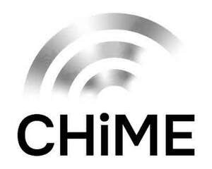

Trade Mark Journal No.2026/012 20 March 2026
UK00004312852 18 December 2025 (9,35,36,42,45)
Mark 1

Mark 2
Mark 3
Mark 4
- Class 9
- Software; downloadable software; computer software; computer software applications; computer software for encryption; software for business; software for management of data; software for asset intelligence, information and management; data processing software; software for the analysis of business data; data management software; data mining software; network management software; information retrieval software; workflow management system software; downloadable computer software for the management of information; mobile device management software; mobile applications; downloadable mobile applications for the management of data and information; time and date recording apparatus; data collection apparatus; mobile data receivers; mobile data apparatus; real-time data processing apparatus; data engines; data processing programs; data loggers; data retrieving devices; none of the aforesaid in relation to financial technology or banking.
- Class 35
- Data management; database management; data management services; computerised data management; data processing management; data processing, systemisation and management; data collection services; collection of data; data processing for the collection of data for business purposes; automated data processing; compilation of data; data retrieval services; computerised data verification; data collection (for others); services comprising the recording of statistical data; consultancy, information and advisory services relating to all of the aforesaid services; none of the aforesaid in relation to financial technology or banking.
- Class 36
- Asset management; asset management services; property asset management services; asset management for third parties; consultancy, information and advisory services relating to all of the aforesaid services; none of the aforesaid in relation to financial technology or banking.
- Class 42
- Software development; software creation and design; software customisation services; software as a service; computer software rental; software engineering; development of software for secure network operations; application service provider services; digital asset management; data encryption services; design and development of software for database management; providing on-line non-downloadable software for database management; material testing for fault detection; dynamic work planning; electronic data storage; computer services for analysis of data; updating of software for data processing; technical data analysis services; research relating to data processing; temporary electronic storage of information and data; data warehousing; data mining; monitoring of network systems; software support and maintenance services; information technology support services; consultancy, information and advisory services relating to all of the aforesaid services; none of the aforesaid in relation to financial technology or banking.
- Class 45
- Advisory services relating to regulatory affairs; advisory services relating to regulatory compliance; reviewing standards and practices to assure compliance with laws and regulations; software licensing; computer software licensing; consultancy, information and advisory services relating to all of the aforesaid services.
Clear Horizon IS Limited
Representative: Shepherd and Wedderburn LLP